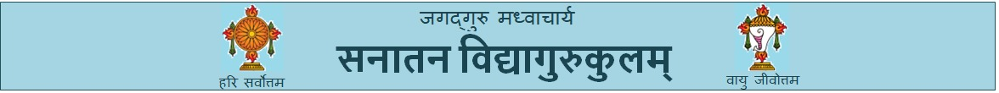

<mat-toolbar color="primary" class="mat-elevation-z8">
    
    <button mat-icon-button [matMenuTriggerFor]="menu" aria-label="Example icon-button with a menu">
        <mat-icon>more_vert</mat-icon>
      </button>
      <mat-menu #menu="matMenu">
        <button mat-menu-item routerLink="Home">
          <mat-icon>Home</mat-icon>
          <span>Home</span>
        </button>
        <button mat-menu-item routerLink="guruParampara">
          <mat-icon>G</mat-icon>
          <span>GuruParampara</span>
        </button>
        <button mat-menu-item routerLink="courses">
          <mat-icon>C</mat-icon>
          <span>courses</span>
        </button>
        <button mat-menu-item>
            <mat-icon>A</mat-icon>
            <span>thirtaKshetra</span>
          </button>
          <button mat-menu-item>
            <mat-icon>U</mat-icon>
            <span>articles</span>
          </button>
          <button mat-menu-item>
            <mat-icon>U</mat-icon>
            <span>aboutus</span>
          </button>
      </mat-menu>
</mat-toolbar>

